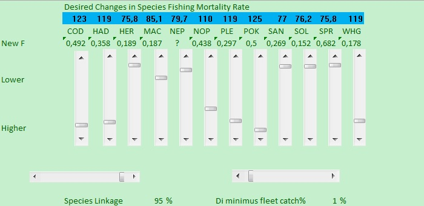
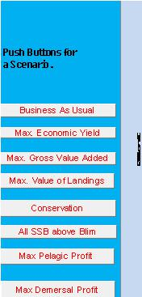
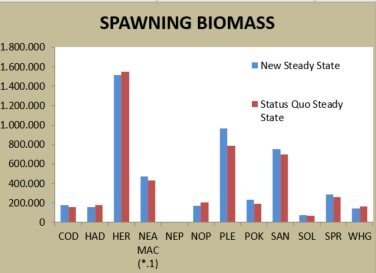
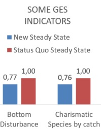
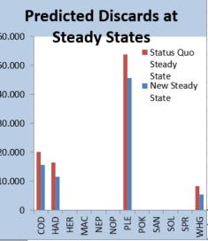
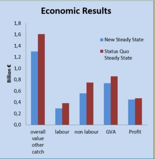
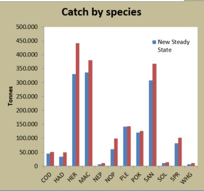
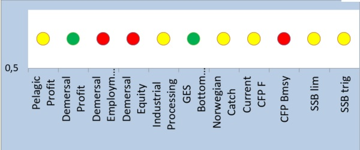

Decision Support Framework
Decision Support Framework

The MareFrame Decision Support Framework is a pragmatic planning process for moving towards an Ecosystem Approach to Fisheries Management. Click on the map of Europe to the left to see all case studies or explore the current case study below.

Instructions for using the Green Model of the North Sea
Introduction: The Green Model is a simplified multispecies model of the North Sea designed to calculate and illustrate the main long term trade-offs involved in fisheries management, that is, trade-offs between different management options based upon changes in species fishing mortality. Changes in fishing mortality are handled by means of sliders for each one of the 12 species considered in the model or by means of pushing the pre-programmed scenario buttons.
The biological sub-module of the Green Model is based upon other models* results which are approximated in order to increase the response time of the calculations. This simplification also allows the model to be presented in EXCEL, a program that is accessible to most users.
YOU MUST NOTE THAT this model is concerned with the LONG TERM and not the SHORT TERM consequences. You should also note that presently its economic submodel currently works with 2014 fish prices and fishing costs. These are not adjusted for volume of catch or intensity of fishing respectively. YOU SHOULD ALSO NOTE that any model is just a coherent story based upon a particular set of assumptions. It is not REALITY.
* Presently it acts as a front end to the ICES WGSAM MSM model (ICES SMS Model runs dated 2014-15) but could be adapted to other models. It works by approximating the behaviour of more complex models as a multispecies Schaefer model or a multispecies Fox model (Collie et al., 2003; Pope, 1989)
Using the Green Model
The Green model deals with multi-species, multi-fleet systems and mixed-fisheries effects. It allows stakeholders themselves to explore the trade-offs on the various players caused by any proposed management action. Trade-offs are related to biological outputs (catch by species, Spawning Stock Biomass and where possible discards or unwanted catch under the Landing Obligation); environmental impacts (bottom disturbance and by-catch) and overall economic results (total revenue, profit and labour than can also be disaggregated to results by fishing gear or country. A Traffic Light Panel also gives the status of various indicators of interest to stakeholder groups compared to their “concern” value.
The model considers the North Sea and adjacent areas (3A and 7D) stocks of cod (COD), haddock (HAD), herring (HER), North East Atlantic mackerel (NEA MAC), nephrops (NEP) ( treated as one stock), Norway Pout (NOP), plaice (PLE), Saithe (POK), sandeel (SAN) (treated as one stock), Sole (SOL), sprat (SPR), and whiting (WHG).
Getting Started
If you have the model on your own computer you should save it as a macro enabled excel spreadsheet. There are several TABs at the bottom of the sheet. The key TAB is called “Control Panel and Dashboard” when you open this {and if needs be push the home button to bring you to the top left hand corner of the sheet (i.e. to cell A1)} you will then see the main controls and also the dashboard results. Hint (You may need to push the view TAB at the top and adjust the zoom to about 65% or less to get these all to show on some computer screens.).
The controls
Two are the interfaces that users can change in the model. One is the sliders on Fishing Mortality, the other are the buttons for pre-programmed Scenarios
Desired Changes in Species Fishing Mortality Rate
One of the main user’s interface is through the sliders for the Fishing Mortality (pale green panel at the top left hand corner of the TAB Control Panel and Dashboard. See Figure 1). The user can modify the fishing mortality on each of the 12 species by using the vertical sliders. These can be modified by:

Figure 1: Desired Changes in Species Fishing Mortality Rate. One of the main control panels for the user to interact with the Model
The 100% level of each mortality is the status quo and this can be modified between 125% and 75%. That is, the sliders can be changed 25% either way (slider dragged down for higher mortality and dragged up for higher mortality). This allows maintaining extreme changes to a limit, something that has an influence in the reliability of the approximations. The numbers above the sliders (in the blue line) are the fishing mortality on each species. For economy of space species are designated by their 3 letter alpha code. The English names of these are given below.
| 3 letter alpha Codes | Species English Name |
|---|---|
| COD | Cod |
| HAD | Haddock |
| HER | Herring |
| MAC | Mackerel |
| NEP | Nephrops |
| NOP | Norway Pout |
| PLE | Plaice |
| POK | Saithe |
| SAN | Sandeel spp |
| SOL | Sole |
| SPR | Sprat |
| WHG | Whiting |
In addition to the 12 vertical sliders there are two horizontal sliders at the bottom of the panel. These sliders determine what changes in fishing mortality are compatible given the mixed species catches of the fishing fleets. The slider to the right –Di minimus fleet catch %, sets a level of catch in percentage such that any fleet catching less than this percentage, of a particular species, need not reduce its fishing mortality on other species in line with the biggest reduction (or smallest increase) on that species. Reductions only have to be made in respect to reductions required on species caught at percentages above this level. The largest percentage decrease (or if mortality on all species are set to increases then the smallest % increase) of these non-exempt species will determine the reduction to apply to all. This slider is normally set at 1% that seems a sensible value.
This rule is potentially modified by the left hand horizontal slider called the species linkage slider. The value of this slider sets the proportion of the fleets largest fishing mortality rate reduction that is applied to other species they catch above the di minimus level. The rational is that fishers can to some extend switch their effort from catching the species with the largest reduction towards the other species. It thus allow an amount of wriggle room to fleets. If this sliders value is made close to zero then the fleets can adapt to the reductions required by for each species. But, where it is set close to 100% fleets largely have to take reductions on other species in line with the biggest reduction they have in their above di minimus species mix. This slider is normally set at 95% implying a tight connection between the species fishing mortality rate for each species.
Scenarios
Another of the user’s interface is through a series of buttons which can be pushed to activate one of the series of scenarios that have been pre programmed into the model (blue column at the left of the TAB Control Panel and Dashboard. See Figure 2). . These buttons are an alternative to changing the fishing mortality by means of the sliders as bypushing the buttons the fishing mortality is set to the values that achieve this scenario (the screen will flicker around the sheet while this is being set up). For example, pushing the business as usual button will set all fishing mortality to 100% of their status quo levels. After the button has been pushed, the users can adjust further the strategies by using the fishing mortality sliders to find a more comfortable mix of trade-offs (trade-offs are explained in the following sub-section).

Figure 2: Push buttons that activate the pre-programmed scenarios of the Model
You will find that to use the buttons you probably need to unblock the macros that run the buttons. This is normally by clicking on the warning message that will appear above the formula bar when first you push a button.
Outputs from the model
The model provides results on seven topics, all of which are located in the TAB Control Panel and Dashboard
Relative Change of Species Effort
The fishing mortality achieved for each species will differ from what the user have requested –either by the sliders or by the scenario buttons. This is because the fishing patterns of the many different fleets (defined here by gear type and by fishing nation) make some fishing mortality combinations impossible (unless the species linkage slider is set to low levels or the Di minimus fleet catch % is set very high. The desired and achieved fishing mortality changes are shown on the radar plot to the left of the sliders (see Figure 3)

Figure 3: Relative Change of Species effort
This is illustrated above for the situation when it is desired to reduce cod fishing mortality to 75% while maintain all other mortalities at 100% of the status quo level. The blue line shows this desired reduction but the red line shows that to achieve this reduction in the fishing mortality of cod the mortality rates of all demersal species must be reduced as well by very similar amounts. However while pelagic species such as herring, mackerel, sprat require no or only small reductions. These required reductions on other species may be lessened by modifying the horizontal sliders from their default levels. NOTE that the scenarios were calculated with the horizontal sliders set at the default values of 95% and 1% respectively and will generally not be valid if other values than these are used in combination with the scenarios given by the buttons.
Spawning Stock Biomass (SSB)
SSB is presented by species (Figure 4), except for Nephrops and Mackerel as these are not included fully in the ICES SMS Model (runs from 2014-15), and therefore results are less assured.
Currently Nephrops are only sketched in as a single stock and Mackerel which is an external stock in SMS is dealt with separately. Mackerel fishing changes are supposed to apply to the entire North East Atlantic stock not just the North Sea Area. Yield though is for the North Sea assuming a typical share.

Figure 4: Screenshot of Spawning Stock Biomass
Good Environmental Status indicators
So far only bottom disturbance and an index of likely bycatch intensity of charismatic species relative to status quo levels (Figure 5). It is expected that the list of indicators can be extended in the future. Indeed a value of the Large Fish Index (LFI) has already be trialed in a new version

Figure 5: Good environmental status indicators
Predicted Discards at Steady States
Weight of discards for species (cod, haddock, plaice and whiting) for which discards are calculated in the ICES SMS Model (runs from 2014-15) (Figure 6)
Under the landings obligation these would be required to be landed but are here assumed to have no value and are excluded from the Economic and Catch results shown in Figure 7.

Figure 6: Predicted discards at steady states
Overall Economic Results
Overall Economic Results such as Overall Value, Labour Costs, Other Costs based on the STECF AER and the consequent Gross Profit (Figure 7).
The economic sub-model currently works with 2014 fish prices and fishing costs. These are not adjusted for volume of catch or intensity of fishing respectively. However the ability to change fish prices, labour and other cost is being implemented in a pre release version and will allow stakeholders to consider how robust their solutions are to factors such as changes in oil price.
The Economic results are split down by Country and Gear type. Norway is not yet fully included in this so results are just for the EU fisheries for which detailed fleet data are available from STECF data bases.

Figure 7: Screenshot of economic results
Due to sparse results and difficulties in translating them to the fleets on which management decisions are made, the Economic results are more indicative of likely directions of change rather than absolute levels of profitability etc.
Catch by Species
The model provides catch (Landings) information both for the long term status quo case and for the consequences of mortality changes on each of the species (Figure 8). These results are also available in more detail by fishing gear type or country.

Figure 8: Screenshot of weight of catch by species
Traffic light Panel
Status of various indicators of interest to different stakeholder groups relative to their levels of concern (it is expected that these concerns levels will be specified by the users after further consultation is completed).

Figure 9: Traffic light panel
Presently the 3 SSB lights (CFP Bmsy, SSB lim, and SSB trig) are set relative to whether all 12 species meet the criteria (green) or if 10 or 11 meet it (yellow) or < 10 species meet the criteria (red).
The other criteria are presently set relative to their status quo levels. If the exceed this (Green) if the lie between 80% and 100% of the status quo level (Yellow) < 80% of the status quo level (Red).
For measures such as bottom disturbance that would be better below the status quo level the test for yellow and red occur at levels above 100%.
Advanced users
Advanced users will find many more results in numerical form in cells AH42:HF42. These are live cells that change with changing mortality rates. These could be used to provide tables or graphs of results not shown in the dash board.
Beneath then may be found the fixed values associated with various scenarios. New scenarios can be developed by optimising cells or combinations of cells from AH42:HK42 using the solver function. This is pre-programmed to optimize the Fishing mortality rates (between 75% and 125%) of status quo levels. Advanced users could thus optimise any available result they wish to build different scenarios. There are also two tabs showing some national and gear results respectively. However, users should carefully note that the present economic model will be less reliable at deeper disaggregation of the data due to limitations of the available data sets.
Text last updated: May 2017